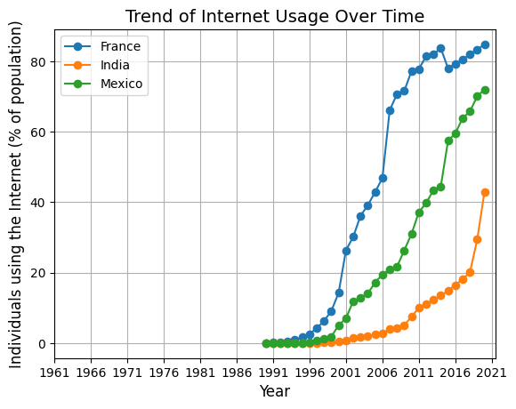
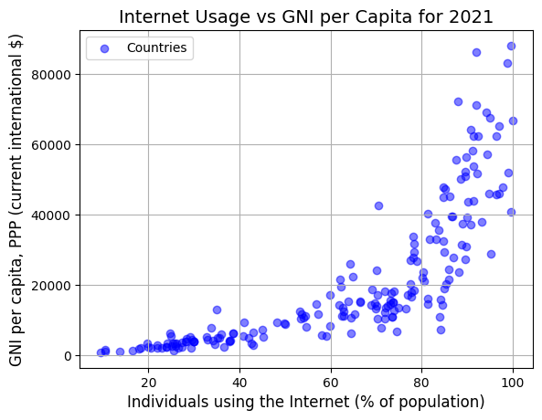

Vizulation WDI dataset#
# Import packages
import pandas as pd
import plotly.express as px
import seaborn as sns
import matplotlib.pyplot as plt
Load data#
Import the WDI dataset
df = pd.read_csv('WDIData.csv', sep=',')
df = df.drop('Unnamed: 66', axis=1)
selected_indicators = ['GDP growth (annual %)',
'Individuals using the Internet (% of population)',
'Foreign direct investment, net inflows (BoP, current US$)',
'GNI per capita, PPP (current international $)']
df = df[df['Indicator Name'].isin(selected_indicators)]
df.head(2)
| Country Name | Country Code | Indicator Name | Indicator Code | 1960 | 1961 | 1962 | 1963 | 1964 | 1965 | ... | 2012 | 2013 | 2014 | 2015 | 2016 | 2017 | 2018 | 2019 | 2020 | 2021 | |
|---|---|---|---|---|---|---|---|---|---|---|---|---|---|---|---|---|---|---|---|---|---|
| 455 | Africa Eastern and Southern | AFE | Foreign direct investment, net inflows (BoP, c... | BX.KLT.DINV.CD.WD | NaN | NaN | NaN | NaN | NaN | NaN | ... | 2.463634e+10 | 2.153424e+10 | 2.768142e+10 | 2.877423e+10 | 1.663278e+10 | 1.003544e+10 | 1.359147e+10 | 1.382234e+10 | 1.257987e+10 | NaN |
| 470 | Africa Eastern and Southern | AFE | GDP growth (annual %) | NY.GDP.MKTP.KD.ZG | NaN | 0.239594 | 7.980768 | 5.164334 | 4.579952 | 5.327717 | ... | 9.230672e-01 | 4.200209e+00 | 3.984387e+00 | 2.952845e+00 | 2.217017e+00 | 2.557135e+00 | 2.485244e+00 | 2.025941e+00 | -2.886856e+00 | 4.303667 |
2 rows × 66 columns
For effective data analysis we need the data in the wide format but with the variable names in the columns
df_long = df.melt(id_vars=['Country Name', 'Country Code', 'Indicator Name', 'Indicator Code'],
var_name='Year', value_name='Value')
df_wide = df_long.pivot_table(index=['Year', 'Country Name', 'Country Code'],
columns='Indicator Name', values='Value', aggfunc='first')
df = df_wide.reset_index()
df
| Indicator Name | Year | Country Name | Country Code | Foreign direct investment, net inflows (BoP, current US$) | GDP growth (annual %) | GNI per capita, PPP (current international $) | Individuals using the Internet (% of population) |
|---|---|---|---|---|---|---|---|
| 0 | 1960 | Botswana | BWA | NaN | NaN | NaN | 0.0 |
| 1 | 1960 | Burundi | BDI | NaN | NaN | NaN | 0.0 |
| 2 | 1960 | Grenada | GRD | NaN | NaN | NaN | 0.0 |
| 3 | 1960 | Maldives | MDV | NaN | NaN | NaN | 0.0 |
| 4 | 1960 | Syrian Arab Republic | SYR | NaN | NaN | NaN | 0.0 |
| ... | ... | ... | ... | ... | ... | ... | ... |
| 13601 | 2021 | West Bank and Gaza | PSE | NaN | 7.050451 | 7370.0 | NaN |
| 13602 | 2021 | Yemen, Rep. | YEM | NaN | -2.061513 | NaN | NaN |
| 13603 | 2021 | Serbia | SRB | NaN | 7.389271 | 20610.0 | NaN |
| 13604 | 2021 | Montenegro | MNE | NaN | 12.434359 | 23280.0 | NaN |
| 13605 | 2021 | Kosovo | XKX | NaN | 9.127578 | 13010.0 | NaN |
13606 rows × 7 columns
Plot data#
Testing plot
country_groups = ["France",
"India",
"Mexico"]
df_groups = df[df['Country Name'].isin(country_groups)]
for group in country_groups:
group_data = df_groups[df_groups['Country Name'] == group]
plt.plot(group_data['Year'], group_data['Individuals using the Internet (% of population)'], marker='o', linestyle='-', label=group)
plt.title('Trend of Internet Usage Over Time', fontsize=14)
plt.xlabel('Year', fontsize=12)
plt.ylabel('Individuals using the Internet (% of population)', fontsize=12)
locs, labels = plt.xticks()
plt.xticks(locs[::5], df_groups['Year'].unique()[::5])
plt.legend()
plt.grid(True)
plt.show()
unique_values = df['Country Name'].unique()
unique_values

array(['Botswana', 'Burundi', 'Grenada', 'Maldives',
'Syrian Arab Republic', 'Thailand', 'Togo',
'Africa Eastern and Southern', 'Africa Western and Central',
'Algeria', 'Argentina', 'Australia', 'Austria', 'Bahamas, The',
'Bangladesh', 'Belgium', 'Belize', 'Benin', 'Bermuda', 'Bolivia',
'Brazil', 'Burkina Faso', 'Cameroon', 'Canada',
'Central African Republic', 'Chad', 'Chile', 'China', 'Colombia',
'Congo, Dem. Rep.', 'Congo, Rep.', 'Costa Rica', "Cote d'Ivoire",
'Denmark', 'Dominican Republic', 'Early-demographic dividend',
'East Asia & Pacific',
'East Asia & Pacific (IDA & IBRD countries)',
'East Asia & Pacific (excluding high income)', 'Ecuador',
'Egypt, Arab Rep.', 'Fiji', 'Finland', 'France', 'Gabon', 'Ghana',
'Greece', 'Guatemala', 'Guyana', 'Haiti',
'Heavily indebted poor countries (HIPC)', 'High income',
'Honduras', 'IBRD only', 'IDA & IBRD total', 'IDA blend',
'IDA total', 'Iceland', 'India', 'Indonesia', 'Iran, Islamic Rep.',
'Israel', 'Italy', 'Japan', 'Kenya', 'Korea, Rep.',
'Late-demographic dividend', 'Latin America & Caribbean',
'Latin America & Caribbean (excluding high income)',
'Latin America & the Caribbean (IDA & IBRD countries)', 'Lesotho',
'Low & middle income', 'Lower middle income', 'Luxembourg',
'Madagascar', 'Malawi', 'Malaysia', 'Mexico', 'Middle income',
'Nepal', 'Netherlands', 'Nicaragua', 'Niger', 'Nigeria',
'North America', 'Norway', 'OECD members', 'Pakistan', 'Panama',
'Papua New Guinea', 'Paraguay', 'Peru', 'Philippines', 'Portugal',
'Post-demographic dividend', 'Pre-demographic dividend',
'Puerto Rico', 'Rwanda', 'Senegal', 'Seychelles', 'Sierra Leone',
'Singapore', 'Somalia', 'South Africa', 'South Asia',
'South Asia (IDA & IBRD)', 'Spain',
'St. Vincent and the Grenadines', 'Sub-Saharan Africa',
'Sub-Saharan Africa (IDA & IBRD countries)',
'Sub-Saharan Africa (excluding high income)', 'Sudan', 'Suriname',
'Sweden', 'Trinidad and Tobago', 'Turkiye', 'United Kingdom',
'United States', 'Upper middle income', 'Uruguay', 'Venezuela, RB',
'World', 'Zambia', 'Zimbabwe', 'Hong Kong SAR, China', 'IDA only',
'Mauritania', 'Myanmar', 'Sri Lanka', 'El Salvador',
'French Polynesia', 'Georgia',
'Middle East & North Africa (IDA & IBRD countries)',
'Middle East & North Africa (excluding high income)',
'New Caledonia', 'Oman', 'Tunisia', 'Caribbean small states',
'Gambia, The', 'Jamaica', 'Morocco', 'Mali',
'Fragile and conflict affected situations', 'Iraq', 'Saudi Arabia',
'Afghanistan', 'Angola', 'Arab World', 'Barbados',
'Brunei Darussalam', 'Cambodia', 'Cyprus', 'Euro area',
'Europe & Central Asia',
'Europe & Central Asia (IDA & IBRD countries)',
'Europe & Central Asia (excluding high income)', 'European Union',
'Ireland', 'Kuwait', 'Lao PDR',
'Least developed countries: UN classification', 'Liberia', 'Libya',
'Low income', 'Malta', 'Mauritius', 'Middle East & North Africa',
'Mozambique', 'New Zealand', 'Other small states',
'Pacific island small states', 'Qatar', 'Samoa', 'Small states',
'Tanzania', 'Uganda', 'United Arab Emirates', 'Vietnam', 'Andorra',
'Central Europe and the Baltics', 'Cuba', 'Eswatini', 'Germany',
'Greenland', 'Guinea-Bissau', 'Kiribati', 'Lebanon',
'Liechtenstein', 'Macao SAR, China', 'Monaco', 'Romania',
'Solomon Islands', 'Tonga', 'Vanuatu', 'Jordan', 'Bahrain',
'Djibouti', 'Guinea', 'Bhutan', 'British Virgin Islands',
'Cayman Islands', 'Sao Tome and Principe', 'Dominica', 'Poland',
'St. Lucia', 'Antigua and Barbuda', 'Cabo Verde', 'Ethiopia',
'Comoros', 'Equatorial Guinea', 'St. Kitts and Nevis', 'Albania',
'Bulgaria', 'Mongolia', 'Namibia', 'Switzerland', 'Hungary',
'Marshall Islands', 'Isle of Man', 'Aruba',
"Korea, Dem. People's Rep.", 'Tajikistan', 'Kyrgyz Republic',
'Micronesia, Fed. Sts.', 'Turkmenistan', 'Ukraine', 'Uzbekistan',
'Palau', 'American Samoa', 'Armenia', 'Azerbaijan', 'Belarus',
'Bosnia and Herzegovina', 'Croatia', 'Czech Republic', 'Eritrea',
'Estonia', 'Faroe Islands', 'Gibraltar', 'Guam', 'Kazakhstan',
'Latvia', 'Lithuania', 'Moldova', 'Nauru', 'North Macedonia',
'Northern Mariana Islands', 'Russian Federation', 'San Marino',
'Slovak Republic', 'Slovenia', 'Timor-Leste',
'Turks and Caicos Islands', 'Tuvalu', 'Virgin Islands (U.S.)',
'West Bank and Gaza', 'Yemen, Rep.', 'Serbia', 'Montenegro',
'Channel Islands', 'Curacao', 'Kosovo',
'Sint Maarten (Dutch part)', 'South Sudan'], dtype=object)
There is a strong relation between GNI and internet usage
df_2020 = df[df['Year'] == '2020']
plt.scatter(df_2020['Individuals using the Internet (% of population)'],
df_2020['GNI per capita, PPP (current international $)'],
alpha=0.5,
color='blue')
plt.title('Internet Usage vs GNI per Capita for 2021', fontsize=14)
plt.xlabel('Individuals using the Internet (% of population)', fontsize=12)
plt.ylabel('GNI per capita, PPP (current international $)', fontsize=12)
plt.legend(['Countries'], loc='upper left')
plt.grid(True)
plt.show()
